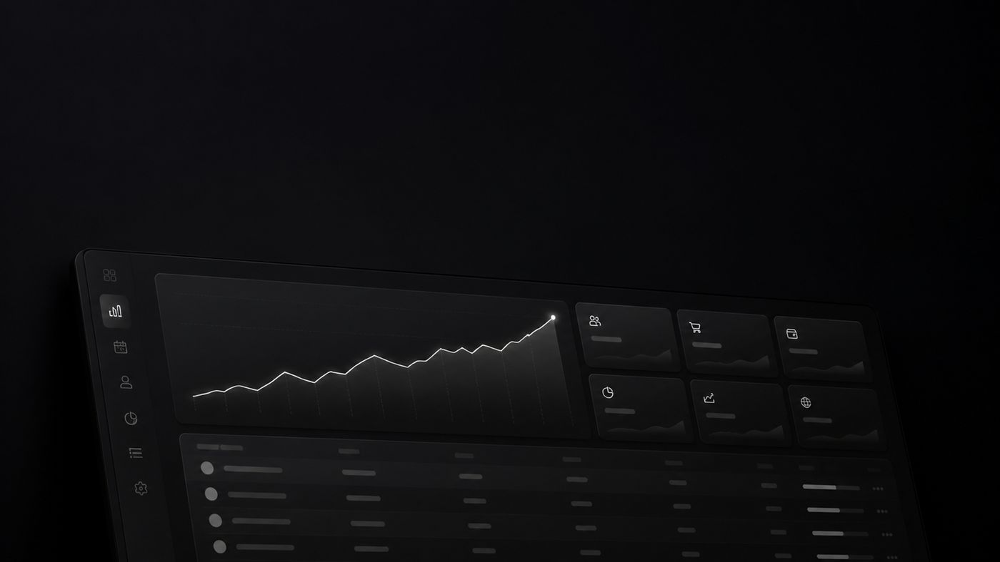

Buchungen & Termine
Verfügbarkeiten, Reservierungen und Bestätigungen an einem Ort statt in Kalender, Mail und Telefonnotiz.
Kein Schaufenster, sondern ein Werkzeug. Deine Leute melden sich an und arbeiten täglich damit – statt mit Excel-Listen, Zetteln und Nachrichten.
Rollen und Rechte Schweizer Server Wächst mit

Eine WebApp lohnt sich, wenn mehrere Personen mit denselben Daten arbeiten und Listen auseinanderlaufen.
Verfügbarkeiten, Reservierungen und Bestätigungen an einem Ort statt in Kalender, Mail und Telefonnotiz.
Status, Zuständigkeit und Fortschritt sind für alle sichtbar – ohne Nachfragen.
Ein aktueller Datenbestand, auf den sich das ganze Team verlässt.
Rechnungen, Zahlungsstatus und wiederkehrende Übersichten ohne Handarbeit.
Du arbeitest früh mit einer echten Version, statt am Ende ein fertiges Produkt zu übernehmen, das nicht passt.
Wir schauen, wie du heute arbeitest, wer was sieht und wo Zeit verloren geht.
Bildschirm-Entwürfe zeigen den Aufbau. Danach steht ein fester Preis.
Der wichtigste Ablauf geht zuerst in den Einsatz und wird im Alltag geprüft.
Wir betreiben, sichern und erweitern das System Schritt für Schritt.
Eine WebApp ist erst gut, wenn sie den Weg abbildet, den dein Team ohnehin geht – nicht den, den eine Fertiglösung vorgibt.
Welche Bausteine dein Betrieb wirklich braucht, klären wir vor der Offerte. Wir bauen nichts ein, wofür es keinen konkreten Anlass gibt.
Wir sagen es offen, wenn eine bestehende Software deinen Fall günstiger löst.
Für verbreitete Aufgaben gibt es gute Programme. Entspricht dein Ablauf dem Standard, ist das der günstigere Weg – und wir sagen dir das.
Sobald du Fertiglösungen mit Zusatzlisten ergänzt, für Funktionen zahlst, die du nie nutzt, oder Daten mehrfach erfasst, wird eine eigene Lösung sinnvoll.
Du brauchst kein Pflichtenheft. Wir nehmen den heutigen Ablauf gemeinsam auseinander.
Wenn mehrere Personen täglich mit denselben Daten arbeiten, Listen auseinanderlaufen oder eine Fertiglösung nur mit Zusatzlisten funktioniert. Passt der Standard, sagen wir das offen.
Das hängt vom Umfang ab. Wir starten bewusst mit einem kleinen, klar abgegrenzten Bereich, der früh in den Einsatz geht, statt monatelang im Verborgenen zu entwickeln.
Auf Servern in der Schweiz, täglich gesichert. Die Daten gehören dir und werden nicht weiterverkauft.
Ja. MASE AI kann Einträge auf Zuruf erfassen und Zusammenfassungen liefern. Er kann nur, was die jeweilige Rolle auch darf – Rechte gelten unverändert. Mehr dazu auf der Seite KI-Lösungen.
Zeig uns, wie ihr heute arbeitet. Wir sagen ehrlich, ob eine eigene WebApp der richtige Schritt ist.